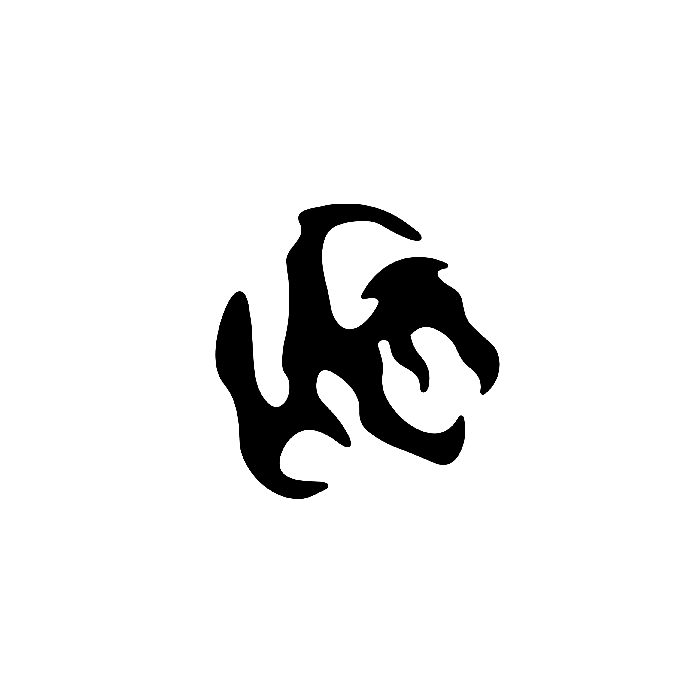

Non structure non-structure is a group with the purpose of sharing music that resonates with the revelation of 'this must be unearthed.' The melodies themselves partake in self-destructive every week, echoing the ephemeral nature of existence. Adherence to the link. Music, the eternal philosopher, whispers to me, inviting you to vibe with us on this mind-bending journey. Dance to your own beat and dive into this expedition whenever the cosmic signal aligns with your vibe. Your soundscapes, discoveries, uniqueness, cosmic insights, unearthed treasures, and the cosmic wisdom you stumble upon resonate deeply with those of us who groove to the rhythm of existence. Remember, your presence isn't a transaction; it's an interstellar jam session of links shared consciousness in the cosmic now.
Picture this: an individual who has weathered an immensely challenging day returns home to solitude, yearning for connection. Upon receiving a carefully chosen piece of music, a ray of solace and purpose illuminates their otherwise bleak day. If the notion of exploring and sharing resonates with you. I encourage you to join in.
Invitation link here
Picture this: an individual who has weathered an immensely challenging day returns home to solitude, yearning for connection. Upon receiving a carefully chosen piece of music, a ray of solace and purpose illuminates their otherwise bleak day. If the notion of exploring and sharing resonates with you. I encourage you to join in.
Invitation link here
Non Structure, Nonstructurelogo, 2023